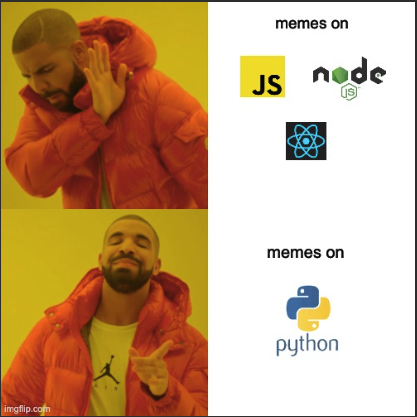
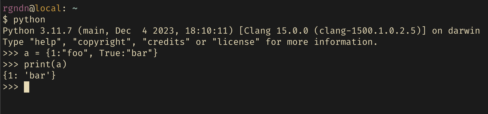

I have seen a lot of memes on JavaScript on the Internet. At this point, JS memes are overtaking the NodeJS memes and time has come to change that. Introducing a new entry into this list - Python. Recently, I have been seeing some quirks of Python on X (twitter) and some of them are my own experiences. This post is all about weird behaviors of Python. Let's go!

Numbers in Python
You can use an underscore ( _ ) instead of a comma ( , ) in python numbers for better readbility. For example, 1_000_000 is a valid number and it is easy to read. Why is it an issue? Imagine you write a regular expression to match number and you forget to include _ in it. Good luck debugging it if you're not aware of this fact.
Trust me all of these numbers are valid and this is the correct regular expression to match numbers in python. LGTM if I see this in code review!
numbers = """
Integers: 1_0_0_0, -2_00, +3_0_000
Floats: 1_2.3_4, -0.5_5, +10_0.0_0_1
Scientific: 1e10, 2.5E-3, 1_2.3_4e+5_0_0, -1.2E-1_0
"""
pattern = r'[+-]?\b\d+(_\d+)*(\.\d+(_\d+)*)?([eE][+-]?\d+(_\d+)*)?\b'
matches = re.findall(pattern, numbers)
Lists in Python
You can multiply a Python list by an integer, and it's totally valid and intuitive. At least, I thought so until I saw this post from François Fleuret
The answer to this is simple. Everything in Python is an object, and when the * operator is used with a sequence type object, it repeats that object x number of times. [[]] * 4 produces [[], [], [], []]. When * is used on an empty list object, it simply repeats the same object 4 times. Remember, all 4 empty lists are references to the same empty list object. When you append to any one of these empty lists, your modification is reflected in all of its copies.
There's great in-depth explanation for this here by Abhinav.
Dictionary in Python
Yet another Python quirk from twitter, posted here.
When python is constrcuting the dictionary, it uses hash(), and in case of hash collision, it checks for equivalence. Here, hash(1) == hash(True) == 1 and 1 == True in Python. So, the key is overwritten.